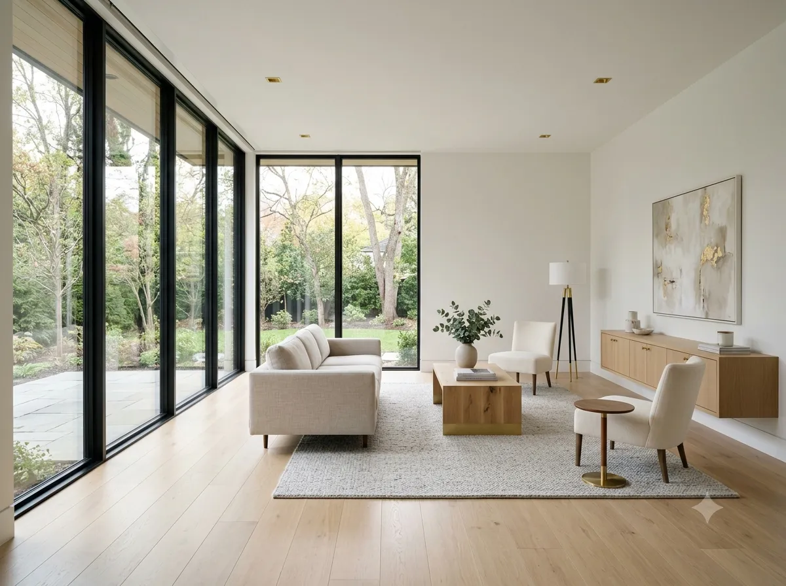

WBS + Gantt
Paste a plain-text outline and a live schedule builds itself — dates cascade from predecessors, the critical path lights up in gold, and near-deadline tasks pulse amber.
ScheduleOne workspace for the whole job — schedule & Gantt, budget & cost tracking, risks & issues, all wired together so every number feeds every other. Built-in AI reads your live project data — zero setup, zero middleman. Capture field notes by voice and keep working with zero signal. No servers, no subscriptions, no training course.
One workspace for the people who carry the job — from the project trailer to the field to the final walkthrough.
Eighteen panels, wired together — enter a number once and it shows up everywhere it matters. No re-entry, no drift.
Paste a plain-text outline and a live schedule builds itself — dates cascade from predecessors, the critical path lights up in gold, and near-deadline tasks pulse amber.
ScheduleMove cards To Do → In Progress → Done, with a dedicated lead-time lane for permits and procurement — plus sprint tools when you're running Agile.
ExecutionBuilt live from your WBS and people lists — click any cell to cycle R → A → C → I. No re-entry, no stale matrix.
AccountabilityLog risks and issues, then run 1,000-trial simulations for real odds on your finish date — P50 and hit probability included.
ForecastBudget lines and a spend log roll straight into an S-curve and earned-value metrics — SPI, CPI, EAC, TCPI — computed, not guessed.
FinanceA real AI engine that runs in your browser — zero keys, zero cloud, works offline. Every answer traces to your actual project numbers, and one-click presets write digests, reports, and claim arguments straight back into the project. Bring your own OpenAI, Google Gemini, or Anthropic Claude key for the Cloud tier — and if a provider rate-limits you, the app automatically falls back to a smaller model and shows a badge naming the one that answered.
IntelligenceDictate a site meeting and it transcribes offline — whisper runs in your browser, no cloud, no per-minute fee. A recorded dispute becomes a counsel-ready Claim Pack on the spot.
FieldSite forecasts and weather windows flag exposed tasks before the rain does — and a delay log keeps the record dispute-ready.
FieldAutosaves to your browser, exports a portable file, and never uploads a byte — your data stays on your device, not someone's server.
PrivacyWhat the crews build on site is exactly what your WBS, budget, and forecast are tracking — every number feeding every other.
No install, no account, no training course — most teams are productive in their first fifteen minutes.
Choose Waterfall, Agile, or Hybrid — or run two at once. The workspace reorganizes around your choice.
Sponsor, stakeholders, scope, budget, KPIs. Paste an existing charter and let it auto-fill.
Import a plain-text outline or add tasks by hand. Dates cascade automatically as the schedule moves.
Health score, EVM, Monte Carlo, and copy-ready digests keep everyone aligned — from any panel.
Every feature works with zero sign-in — forever. Signing in only unlocks convenience for backing up and moving between devices. We gate the backup, never the app.

Handoff-ready documentation, punch lists, and closeout — captured in the same workspace that ran the whole job.
Twenty guide sheets, styled like a real set of construction drawings, walk you from your first 15 minutes to the FAQ.
No. My MaNaGeR runs entirely in your browser — no install, no account, no subscription. Open the app and go.
Each project is protected by its own access code. Ask your admin for the code — a view-only code opens the project read-only.
On your own device. Everything autosaves to your browser and you can export a portable file anytime. Nothing is uploaded anywhere.
Current versions of Chrome, Edge, Firefox, and Safari — desktop and mobile.
Open Settings ▸ Controls ▸ Save Project to File to export a portable .json — your ticket to a new device, a teammate's laptop, or just peace of mind. Load Project from File restores it anywhere. LocalStorage protects you from a closed tab; a saved file protects you from a wiped browser.
The app runs Waterfall, Agile, or Hybrid — pick one, or run two at once. Once your team commits, lock it in from Settings ▸ Controls: a gold padlock appears in the header and the app blocks mid-project switching — the same discipline as a signed-off drawing set.
An optional Six Sigma workflow for recurring quality or process problems — Define, Measure, Analyze, Improve, Control. It's separate from one-off change requests and you switch it on in Settings. Most projects never need it, so it stays hidden until you do.
No — the app runs entirely in your browser and autosaves locally. The only things that need a connection are optional: live weather forecasts, and the first-time load of the libraries that parse an uploaded charter.